System Design¶
Case Studies: System Design Interview
Tools¶
Resources¶
- System Design Cheatsheet
- study guide
- System Design Primer
- more detailed study guide
- System Design Interview An Insider’s Guide by Alex Xu.pdf
- a tutorial on system design interviews
- 13 problems
- DDIA (2017)
- a textbook for system design
- DDIA pdf | github
- DDIA pdf | libgen
- Grokking the System Design Interview
- Gaurav System Design Playlist | Youtube
- Exponent | Youtube
- Problems Aggretation
- Database Schema Templates
newsletters / blogs¶
- The Pragmatic Engineer
- Quastor
Key Characteristics of a Distributed System¶
- Scalability
- Reliability
- Availability
- Efficiency
- #Maintenability
Consistency¶
strong consistency¶
guaranteed to read the latest data
weak consistency¶
not guaranteed to read the latest data
eventual consistency¶
if no new input, all replicas will eventually have the latest data
read-your-writes consistency¶
- after a user updating its own stuff, it should be able to see the updates
- can be achieve by reading the user's profile from leader and other stuff from followers
monotonic reads¶
- read\(_t\) should retrieves a later state than read\(_{t-1}\)
- can be achieved by each user always reads from the same replica
- can be achieved by ranged based #load balancing
Scaling¶
Vertical Scaling¶
make a server bigger & stronger
- pros
- fast inter-process communication
- data consistent
- cons
- single point of failure
- only 1 server -> no failover & redundancy
- hardware limit
- expensive
- single point of failure
Horizontal Scaling¶
add more servers
- pros
- scale well
- cons
- slow inter-process communication
- need RPC between machines
- need load-balancing
- data inconsistency
- slow inter-process communication
Multi Data Centers¶
To scale internationally, we can have data centers across the globe.
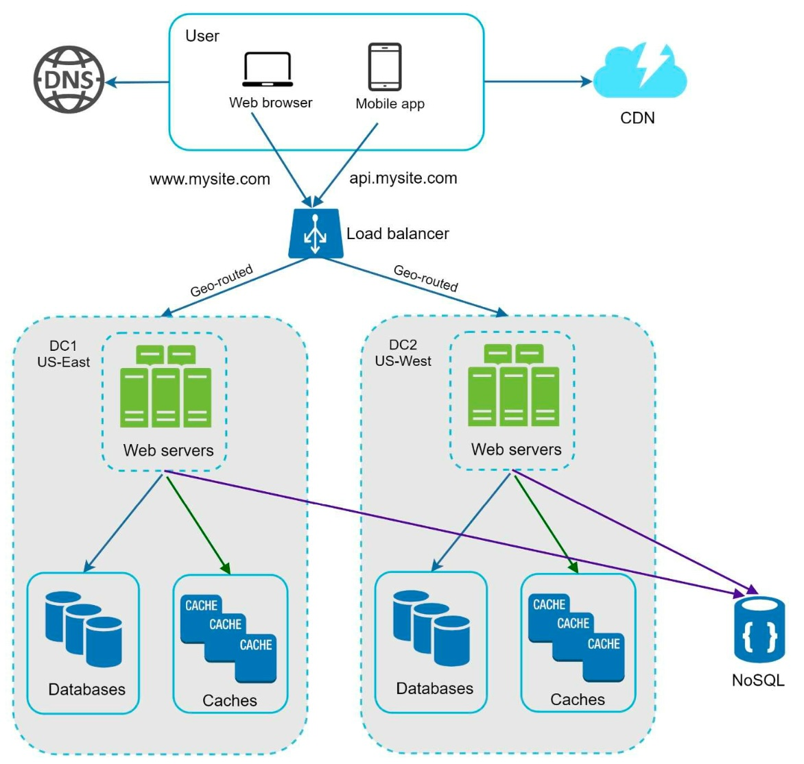
challenges
- traffic redirection
- use geoDNS to resolve domain names -> IP addresses based on the user's location to point to the best data center
- data sync
Performance¶
- the performance of the 99.9th percentile is the most important
- slow requests -> have many data -> valuable customer
- Amazon:
-
- 100ms -> -1% revenue
-
- 1s -> -16% revenue
-
- service level agreements (SLAs)
- service is up when
- median < 200ms
- 99th < 1s
- service needs to be up > 99.9% of the time
- refund if not met
- service is up when
Networking Metrics¶
- bandwidth
- max throughput
- throughput
- latency
Maintenability¶
- Operability
- easy to operate
- Simplicity
- easy to understand
- Evolvability
- easy to make changes
Operability¶
To make things easier to operate
- provide observability
- avoid single point of failure
- -> no down time when updating a machine
- good documentation
- finite state machine of all the things that may happen
Simplicity¶
- complex -> bad operability & evolvability
- abstraction reduces accidental complexity
- accidental complexity = complexity rising not from design but implementation
- pros of abstraction
- hides implementation details
- can be reused
- benefits all apps using it when improved
- e.g. SQL
Database¶
One-to-Many Relationship¶
Object-Relational Mismatch Problem
Many real life data has one-to-many relationship e.g. a person may have several work experience, but relational tables aren't like that, so a translation layer between database model & application code is needed.
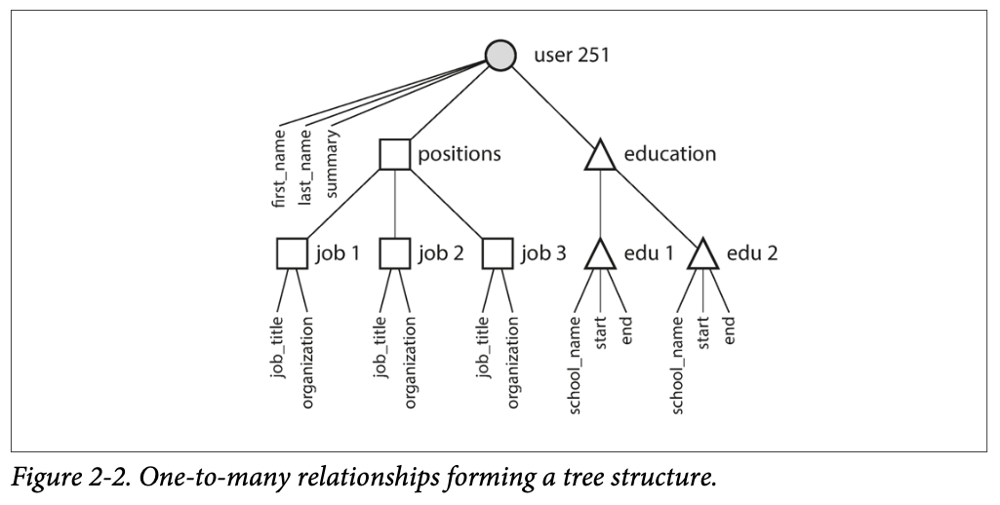
Solutions
- traditional SQL model: creating multiple tables with foreign keys to the common table
- cons
- bad locality: needs to perform multiple queries or multi-way join to get all data
- 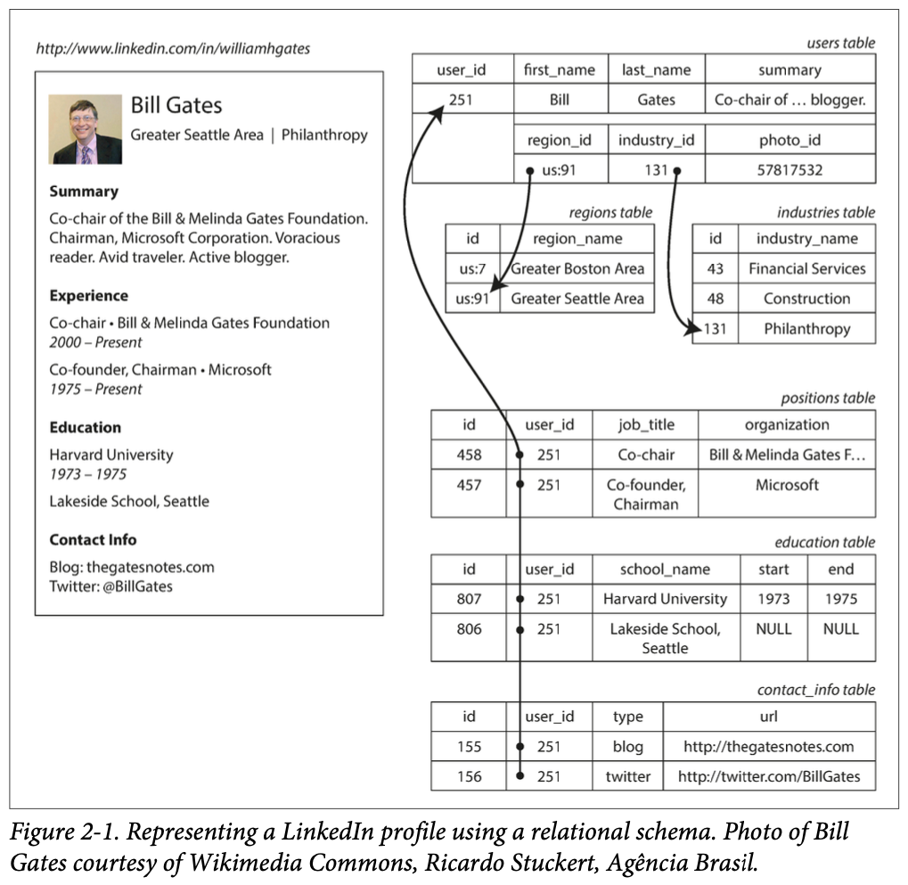
- cons
- later SQL versions
- use JSON datatype
- pros
- good locality
- everything in one place
- only need one query
- good locality
- encode those as JSON and store as text
- cons
- can't query the keys in the text json
- cons
Many-to-One & Many-to-Many Relationship¶
Problems of document model
Data has a tendency of becoming more interconnected as features are added to applications.
Many tree-like one-to-many data actually become graph-like many-to-many relationship when scaling and adding new features.
e.g. a person has 2 schools in his profile page, but the schools should also have the person in their profile page
Document databases e.g. MongoDB, which excel at tree-like structures, have weak or no support for joins as one-to-many relationships don't need joins. This makes them not suitable for many-to-many relationships.
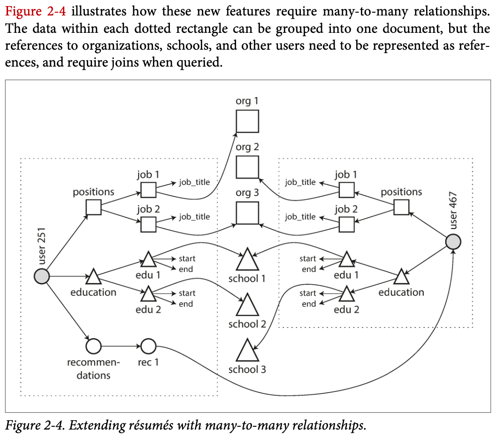
Problems of network model
Network model stores hierarchical as a graph. Each record can have multiple parents.
To query or update a record, the application code has to go through the graph from the root, making it complicated and inflexible.
Relational model the solution
- query optimizer does the heavy-lifting, not the application code
- declare a new index to query data in a new way
- query optimizer will automatically choose the best index
ACID¶
The 4 properties that define a transaction.
- atomicity
- consistency
- isolation
- transactions are isolated to each other
- durability
Typically a trait of RDBMS, while NoSQL DBs typically don't support it.
CAP¶
A distributed system will either be consistent or available when partitioned (a part is down).
- Consistency
- the read value is always the most recent
- Availability
- you can read whenever you want
- Partition tolerance
- misleading because partition will happen
Partition / network failure is unavoidable in a distributed system, so the choice is whether we want consistency or availability when it happens. Typically, RDBMS chooses consistency over availability, while NoSQL chooses availability over consistency.
If we have 3 servers, and one of them is down i.e. the network is partitioned
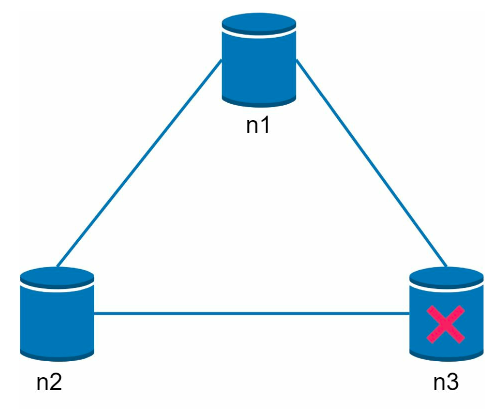
If we choose consistency, we will block all writes to the other servers (n1 & n2), thus making the system unavailable. If we choose availability, we will accept writes to n1 & n2 and sync them to n3 when it's back up.
Primary Key¶
- uuid (universally unique identifier)
- how to generate
- timestamp
- random
- pros
- unique
- stateless
- cons
- not intrinsically sortable
- performance issue for MySQL
- how to generate
- integer
- how to generate
- auto increment
- pros
- readable
- cons
- not unique across distributed systems
- stateful
- neet to consult db to know the next integer
- how to generate
Index¶
- lookup time with B Tree is \(O(\log n)\)
Handling Hierarchical Data¶
If your data is a tree-like structure (undirected graph), you can design your relational db schema in multiple ways.
Multiple Tables¶
Use multiple tables with each non-root table having a foreign key referencing to the parent.
Analysis
- pros
- ?
- cons
- may have multiple tables storing the same kinds of information
- e.g. managers & SWEs are all employees
- may have multiple tables storing the same kinds of information
Adjacency List¶
Have a column recording to the parents.
Minimal schema example
- id
- parent_id
See SQL#Recursive Queries for quering a subtree
Analysis
- pros
- simple
- cons
- need recursive queries to get a subtree, slow in deep trees
Nested Sets¶
A segment tree. Record left & right values in a row.
Example table
| id | name | left | right |
|---|---|---|---|
| 1 | Electronics | 1 | 12 |
| 2 | Cell Phones | 2 | 7 |
| 3 | Smartphones | 3 | 4 |
| 4 | Basic Phones | 5 | 6 |
| 5 | Computers | 8 | 11 |
| 6 | Laptops | 9 | 10 |
| 7 | Desktops | 8 | 9 |
| 8 | TV & Home Theater | 11 | 12 |
| 9 | Books | 13 | 18 |
| 10 | Fiction | 14 | 15 |
| 11 | Non-Fiction | 16 | 17 |
| 12 | Music | 19 | 20 |
Exclusively use left & right to do queries (i.e. id isn't involved when quering)
Analysis
- pros
- faster to query a deep subtree
- cons
- slow insertion: need to update the
left&rightfields of many records when inserting or moving a node
- slow insertion: need to update the
Lineage Column / Path Enumeration / Materialized Path¶
Store the path in a field.
Example table
| id | name | path |
|---|---|---|
| 1 | Electronics | 1 |
| 2 | Cell Phones | 1/2 |
| 3 | Smartphones | 1/2/3 |
| 4 | Basic Phones | 1/2/4 |
| 5 | Computers | 1/5 |
| 6 | Laptops | 1/5/6 |
| 7 | Desktops | 1/5/7 |
| 8 | TV & Home Theater | 1/8 |
| 9 | Books | 9 |
| 10 | Fiction | 9/10 |
| 11 | Non-Fiction | 9/11 |
| 12 | Music | 12 |
Analysis
- pros
- very easy to query a subtree
- e.g.
LIKE '1/2/%'
- e.g.
- very easy to query a subtree
- cons
- very complex to move a node
- need to update the path of itself and all its children
- no referential integrity
- very complex to move a node
Closure Table / Bridge Table¶
Have a dedicated table recording the relationship.
Example relationship table
For 1 -> 2 -> 3
| ancestor_id | node_id |
|---|---|
| 1 | 1 |
| 1 | 2 |
| 1 | 3 |
| 2 | 2 |
| 2 | 3 |
| 3 | 3 |
(omitting primary key)
Analysis
- pros
- easy to select a subtree
- cons
- complex to move a node
- relationship table \(O(n^2)\) space worst case
References¶
- Hierarchical Data in SQL: The Ultimate Guide
- Hierarchical Database, multiple tables or column with parent id? | Stack Overflow
Federation¶
- split db by functions
- similar pros & cons to #Sharding
- pros
- less traffic for each db
- smaller db -> more fit into memory -> less cache misses
- can write to different dbs in parallel
- cons
- joining data from 2 dbs is complex
Denormalization¶
- normalization reduced data duplication, while denormalization increases it
- good for read-heavy applications
- pros
- reduce needs of complex joins
- especially if data is distributed with #Federation or #Sharding
- reduce needs of complex joins
- cons
- duplicated data
- expensive writes
- more complicated to enure that redundant copies of data is consistent
Storing passwords in the database¶
- db entry
- hash(password + salt)
- salt
- register flow
- randomly generate a salt -> combine with user entered password -> hash -> store hashing result & salt into database
- auth flow
- retrieve user's salt from db -> combine with entered password -> hash -> compare with db entry
- ref
CQRS¶
Command and Query Responsibility Segregation, separating read and write layer s.t. we can optimize & scale each side separately
motivation: a model optimized for read may be very unoptimized for write, vice versa
You can separate read & write mode virtually, or physically. If you use different DB for read & write, you'll need to implement syncing from write DB to read DB.
articles
NoSQL¶
- high scalability with horizontal scaling
- high availability with #Replication
- data don't get removed instantly -> can undelete
choose it over RDBMS if
- needs very low latency
- values availability over consistency
- no relationship between data
- unstructured / schema always changing
- huge amount of data (large scale)
BASE¶
properties of #NoSQL
- Basically Available
- guarantees availability
- Soft state
- the state of the system may change over time even without input
- Eventual consistency
Wide Column Store¶

- good for
- time series data
- large scale data
- write-heavy scenario
- e.g. logging & real time analytics
- e.g. HBase & Casandra
Replication¶
Leader-Based Replication¶
- 1 replica leader/master, others followers/slaves
- write to leader, read from any
- leader replicates changes to followers (sync or async)
- with replication logs
- built-in for relational databases & message queues of high availability (e.g. Kafka & RabbitMQ)
replication methods¶
- sync
- leader wait for response
- -> high durability
- async
- leader don't wait for response
- -> high avaibility
Leader-Based Replication often uses async replication
adding a new follower¶
- set up a follower node with a snapshot of the leader
- sync with the leader with leader's log
failover¶
- only 1 follower and it dies -> read from leader
- multiple followers and one dies -> redirect its traffic to other followers
- leader dies -> promote a follower to leader
- possible data loss since it may not be up to date with the leader if using async
Multi-Leader Replication¶
- only for across data centers, while still using #Leader-Based Replication inside each data center
- needs to resolve write conflicts
Leaderless Replication¶
- writes to several replicas in parallel
- defined as success if \(x\) out of \(n\) is successful
- read from several replicas in parallel, and use version number to decide which is newer
- no failover
- used by key-value stores to support high availability
- e.g. DynamoDB
Quorums¶
- \(n\) relicas
- \(w\) confirmations required for each write
- \(r\) confirmations required for each read
- if \(w+r>n\), we're gauranteed to read the latest data -> #strong consistency
- for fast read, \(r=1, w=n\)
- for fast write, \(w=1, r=n\)
- data loss may still happen if there are 2 concurrent conflicting writes, which need to be resolved
- sloppy quorums
- when some of the replicas fails, we can activate some backup nodes, which will result in a different set of nodes
- if we still accept the writes as long as there are \(w\) nodes available, it's called a sloppy quorum, where \(w+r>n\) don't guaranteed #strong consistency
- hinted handoff - when a node is back up, the backup node will push the changes to the node
- improve availability at the cost of consistency
Resolving conflicts¶
version vector / vector clocks¶
- a way to detect conflicts
- maintain a vector of tuple
(Server No., write counter of this server / version) - compare 2 vectors to check if there's a conflict
- ancestor-descendant -> no conflict
- siblings -> have conflict
- 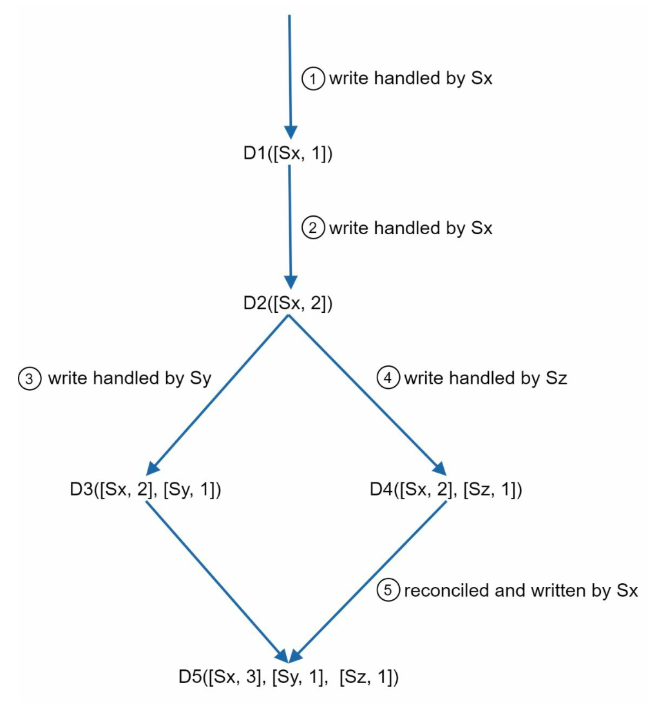
- cons
- vector can grow rapidly
last write wins¶
- a way to resolve conflicts
- have a timestamp for each write
- when resolving write conflicts, use the one with the biggest timestamp
- supported by Cassandra & Redis
- achieves eventual consistency
- sacrifice durability, may have data loss
- concurrent writes to the same key all appear as successfuly, but only one of them is used
- we can minimize data loss by update each field based on primary key independently (Cassandra's approach)
- 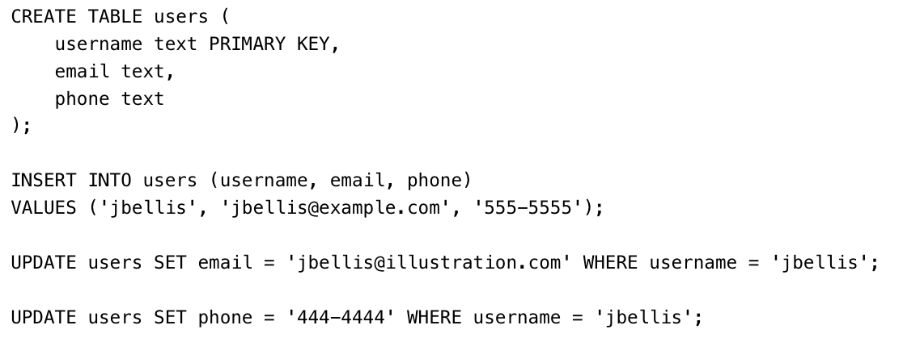
Handling failures¶
- for #Leaderless Replication, handle temporary failure with using sloppy quorum
- use merkle tree to sync data
- tree with each node being the hash of its subtree
Sharding¶
Partitioning/splitting the database accross nodes/servers. #Horizontal Scaling for database.
- pros
- lower traffic per server
- failure more localized
- less data in a server -> more data in cache -> less cache misses
- cons
- complicated joins across different shards
Range Based Sharding¶
- distribute based on the 1st letter of the key
- e.g. A-C at shard 1, D-F at shart 2, ...
- cons
- may have unbalanced servers
Vertical Partitioning¶
- partition by different features
- e.g. profiles, messages, connections, etc.
- cons
- table can still be large -> need repartition
Key/Hash-Based Partitioning¶
- hash -> mod by N to distribute to N servers
- problems
- add servers -> need to redistribute all the data -> very expensive
- solution: #Consistent Hashing
- MemCached uses this
- solution: #Consistent Hashing
- some keys are more popular than the others
- solution: dedicated shards for celebrities
- add servers -> need to redistribute all the data -> very expensive
Directory-Based Partitioning¶
- maintain a lookup table
- pros
- easy to add servers
- cons
- lookup table -> single point of failure
- constantly access lookup table -> impact performance
Load Balancing¶
request id -> hashed request id -> mod by n (# of servers) -> direct to the server
load balancer features¶
- distribute loads across backend servers
- SSL termination
- decrypt requests & encrypt responses s.t. backend servers don't need to do it
- can act as a reverse proxy
load balancing layers¶
- layer 4 - transport layer
- distribute loads based on ip address
- faster & less computation needed
- layer 7 - applicaton layer
- distribute loads based on contents
Cost of adding new servers¶
New servers -> some requests will be directed to a different server -> cache miss
Consistent Hashing¶
Goal: Minimize the cost when adding new servers. To do that we want to have as few mappings changed as possible.
Key concept: Randomly assign servers to a position in an arbitrary circle, and each of them serve the requests closest to them (in the counterclockwise direction)
Each object's location = hashed key mod # seats in the ring
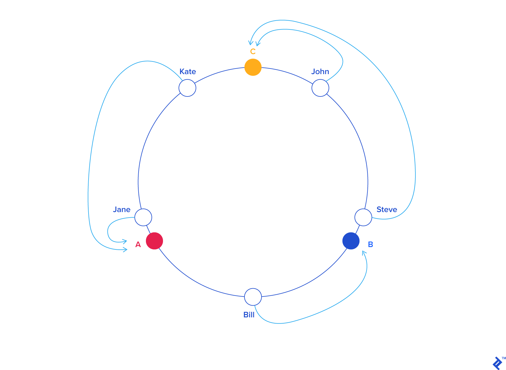
To make it more balanced, we'll have multiple angles for each server scattered around the pseudo hash circle.
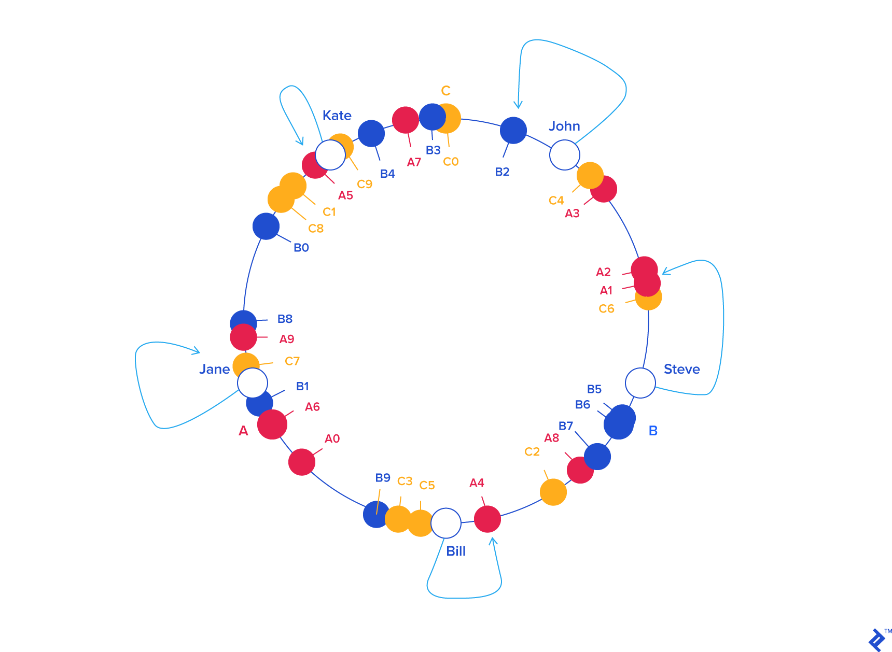
When 1 server is added, only \(k/N\) keys would be reassigned, where there are \(k\) keys & \(N\) servers.
reference
Distributed Systems¶
Rate Limiter¶
motivation¶
- prevent DoS attacks
- reduce cost / resource used
- if using paid 3rd party APIs
requirements¶
- client-side or server-side (assuming server-side)
- rate limit based on IP? User ID? etc.
- Work in a distributed environment?
- shared across servers / processes or not
- separate service or in application code
- Do we inform the user?
placement¶
- at server side
- between client & server, as a middleware
- normally supported by API gateway (a kind of reverse proxy)
algorithm¶
- token bucket
- a bucket of tokens, indicating capacity
- each accepted request consumes a token
- if no token in the bucket, drop the request
- bucket refill tokens periodically
- parameters
- bucket size
- refill rate
- how many tokens per second
- leaking bucket
- a fixed sized FIFO queue
- request processed at rate
- parameters
- bucket size
- process rate
- fixed window counter
- a max amount of requests per time slot
- parameters
- parameters: \(n\) requests per \(p\) seconds window
- memory needed
- assuming rate limit based on user ID
- user ID 8B
- timestamp 4B (32-bit)
- 2B if only store minutes & seconds
- counter 2B
- each user 12B, excluding overheads
- 1M users -> 12MB
- cons
- burst requests around the split of 2 time windows can cause more requests than the quota to go through
- sliding window log
- keep track of request timestamps
- window = \([t-p, t]\), where \(t\) = timestamp of the latest request, \(p\) = window size in time
- when a new request comes in, remove the timestamps in window smaller than \(t-p\), and set window start time as \(t-p\)
- if window size smaller than max, accept the request and add the timestamp in the window
- parameters: \(n\) requests per \(p\) seconds
- memory needed
- assuming rate limited based on user ID, max requests an hour
- user ID 8B
- each timestamp 4B
- each user 8B + 4B x 500 = 2kB, excluding overheads
- 1M users -> 2GB
- pros
- accurate rate limiting
- cons
- requires a lot of memory since we're storin timestamps instead of counters
- sliding window of tiny fixed window counters
- fixed window counter + sliding window
- rate limit: \(n\) requests in 1 hour
- use fixed windows of size \(\dfrac{1}{k}\) hr, aggregate the counters of the past \(k\) windows, and compare with \(n\)
- set counter TTL to 1 hr
- memory usage much smaller than "sliding window log" since we store counters instead of timestamps
- roughly \(k\) times the usage of "fixed window counter" since we use \(k\)x more windows
- sliding window counter
- if a request comes in at \(x\%\) of the current window, window size = \((1-x\%)\) x number of requests in previous window + number of requests in current window
- accept if window size < max
- parameters: \(n\) requests per \(p\) seconds
- 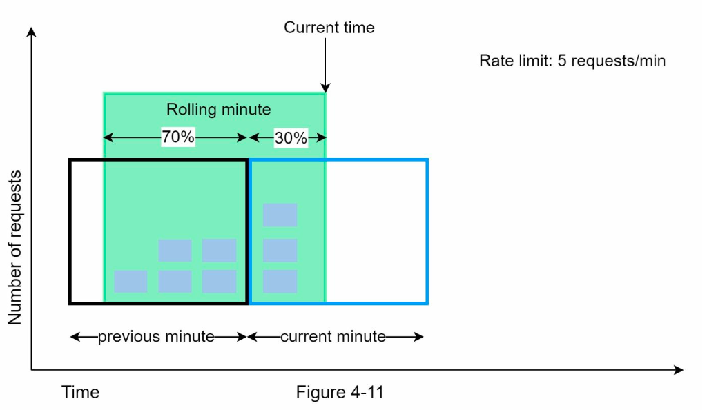
- pros
- solve the spike problem in fixed window counter
- cons
- it assumes the requests in the previous window is evenly distributed
design¶
- Use in-memory cache like Redis to store the counters.
- high level architecture
- 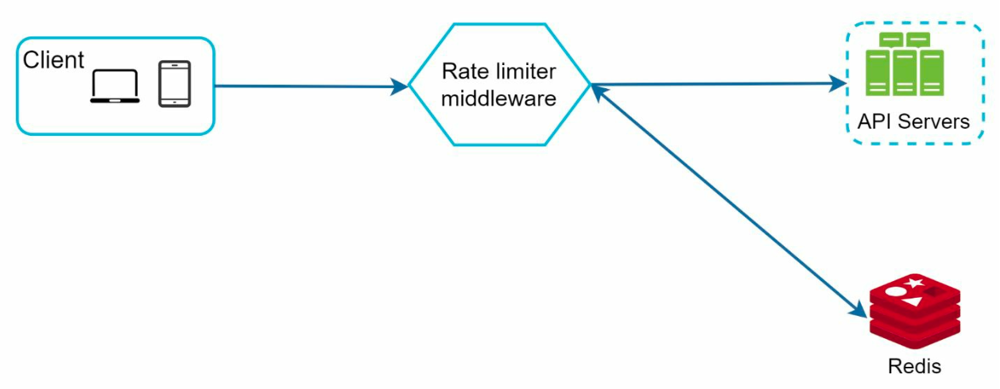
- save rules as config files on disk
- have workers to pull and store in cache
- response headers
X-Ratelimit-RemainingX-Ratelimit-Limit
- when exceeds rate limit
- return 429 too many requests
- return
X-Ratelimit-Retry-Afterin header - can choose to drop it or send it in a queue
- detailed architecture
- 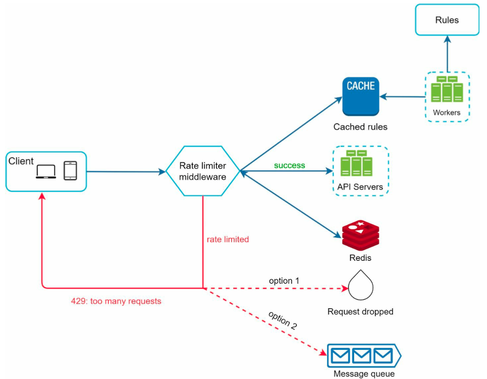
- challenges in a distributed environment
- race condition
- when 2 requests read the same counter at the same time
- solution: lock
- slow
- solution: atomic operation with Redis
- read count -> write new count, as an atomic operation
- solution: lock
- when 2 requests read the same counter at the same time
- synchronization across rate limiters
- solution: sticky session - a client always use a specific rate limiter
- neither scalable nor flexible
- solution: use the same Redis as data store
- solution: sticky session - a client always use a specific rate limiter
- race condition
- performance optimization
- #Multi Data Centers (or edge servers) setup s.t. rate limiters can be close to users
- sync with eventual consistency
- #Multi Data Centers (or edge servers) setup s.t. rate limiters can be close to users
- monitoring
- gather data to understand if the rules or algorithms are working well
Unique ID Generator¶
Requirements
- unique & sortable
- ID increments by time but not necessarily by 1
- numerical
- within 64-bit
- generate 10k IDs per second
#Multi-Leader Replication auto increment¶
- auto increment but by \(k\) where there are \(k\) db servers
- cons
- hard to scale with #Multi Data Centers
- no time consistency (later time -> bigger number) across servers
- problems when servers are added/removed
UUID¶
- 128-bit
- low probablity of collision
- 1B per second x 100 years -> P = 50% for having 1 collision
- pros
- each server generate their own UUID independently
- easy to scale
- cons
- 128-bit long
- no time consistency
- non-numeric
ticket server (Flickr)¶
- central server in charge of auto increment
- pros
- works well with medium-scale apps
- cons
- single point of failure
Snowflake (Twitter)¶
- 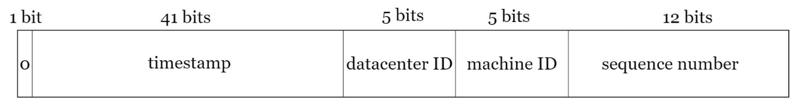
- 64-bit
- sign bit - 1 bit
- always 0
- timestamp - 41 bits
- epoch time
- 69 years
- datacenter ID - 5 bits
- max 32 datacenters
- machine ID - 5 bits
- max 32 machines each data center
- sequence number - 12 bits
- auto increment by 1, reset to 0 every ms
- max 4096 IDs per ms for a machine
- sign bit - 1 bit
- pros
- satisfies all the requirements
- important problems / tradeoffs
- clock synchronization problem
- sol: Network Time Protocol
- we can allocate the timestamp & sequence number bits to fit our needs
- more timestamp bits & less sequence number bits -> for low concurrency long-term applications
- needs high availability
- clock synchronization problem
Key-Value Store¶
requirements¶
- operations
put(key, value)get(key)
- small key-value pair, < 10kB
- high availability
- high scalability
- automatic scaling
- add/remove servers automatically based on traffic
- low latency
single server¶
- store as a hash table in memory
- to fit more data
- data compression
- store frequenty used data in memory, the rest on disk
- reaches capacity easily
distributed server¶
- #CAP - do we want consistency or availability during network failures?
- data partition
- for a large applicaton with a lot of data, it's not possible to fit all data inside a single server, so we would want to partition it
- challenges
- distribute data evenly
- minimize data movement when add/remove nodes
- #Consistent Hashing
- auto scaling - add/remove servers based on loads with minimal cost of data movement
- allocate virtual nodes based on server capacity
- data #replication
- replicate data to \(k\) servers
- to closest \(k\) servers on the hash ring clockwise
- physical servers not virtual nodes since a physical server may have multiple virtual nodes
- to closest \(k\) servers on the hash ring clockwise
- replicas are placed across data centers for better reliability
- since nodes at the same data center often go down together
- we can achieve #strong consistency or not by setting #Quorums parameters
- eventual consistency is usually selected for highly available systems
- replicate data to \(k\) servers
- resolving inconsistency - see #Leaderless Replication#Resolving conflicts
- handling failures
- detecting failures - gossip protocol
- we need multiple sources to confirm a server is down, but all-to-all multicasting (each tells everyone else) is inefficient
- instead, each node pings its status to some random nodes periodically, if one node hasn't been updated for a long while, it's considered online
- #Handling failures
- detecting failures - gossip protocol
architecture¶
- main features
get(key)&put(key, value)APIs- a coordinator node between client and nodes
- nodes distributed using #Consistent Hashing
- data is replicated to multiple nodes
- 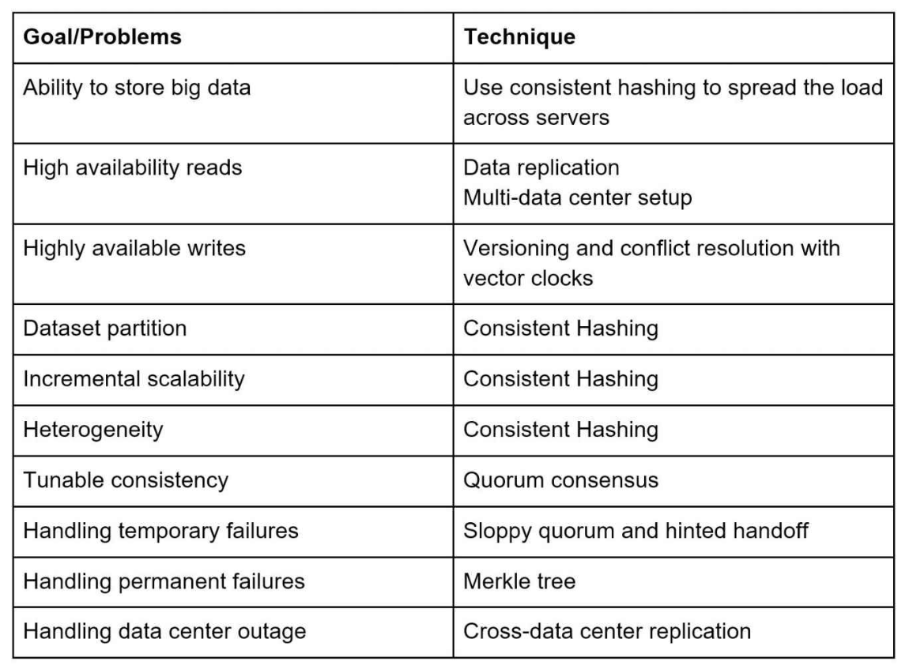
- 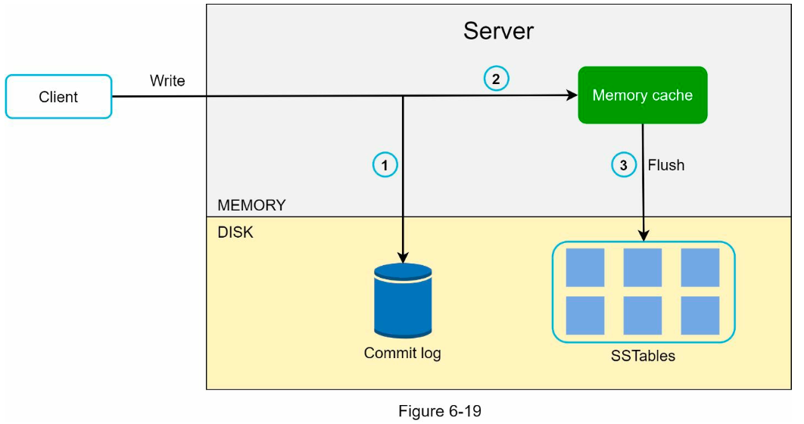
- Cassandra architecture
- write operation
- log the write request in commit log
- save to memory cache
- flush the data to SSTable (sorted-string table) when memory cache is full
- read operation
- return data if key is in memory cache
- read from SSTable with bloom filter if not in memory cache
Caching¶
Advantages of caching¶
- reduce network calls
- reduce repetitive calculations
- reduce DB load
In-memory cache vs. global cache¶
- in-memory cache
- fast
- data inconsistency across multiple caches
- if requests are randomly load balanced across servers, there would be a lot of cache misses
- e.g. Memcached, Redis
- global cache
- slower
- all clients access the same global cache so no data inconsistency problem
- e.g. CDN
Cache Population Policy¶
- read strategies
- cache aside
- cache miss -> application fetch data from db -> application write to cache
- application manages all the stuff
- read-through
- cache miss -> cache fetch data from db -> write to cache
- cache handles everything, application doesn't communicate with db directly
- refresh-ahead
- when cache entry is fetched, fetch latest data from db if close to expiration
- performance depends on prediction accuracy
- cache aside
- write strategies
- write-around
- directly write to db, bypassing cache
- write-through
- write to cache -> write to db, SYNCHRONOUSLY
- pros
- consistent data
- no data loss
- cons
- high latency
- write-behind/write-back
- write to cache -> write to db, ASYNCHRONOUSLY
- with a queue
- pros
- low latency
- cons
- low consistency
- may have data loss
- write to cache -> write to db, ASYNCHRONOUSLY
- write-around
Cache Eviction Policy¶
- first in first out
- least recently used
- least frequently used
CDN¶
mostly static files

Async¶
- slow operations should be done asyncly
- pre-process
- have the thing ready before user access if being out-of-date is acceptable
Message Queues¶
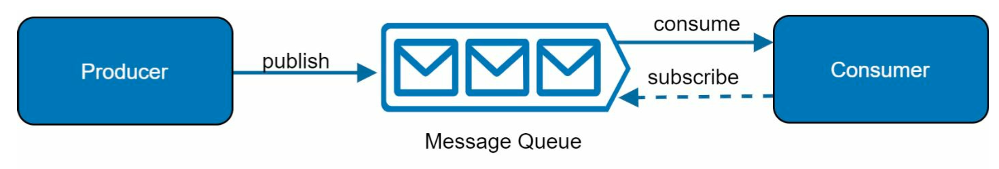
- a queue for requests
- in memory
scaling¶
- can scale producer & consumer independently
- queue to big -> add more workers in consumer
Back Pressure¶
- stop accepting requests when queue is full
- can be used with exponential backoff
Microservices vs. Monolith¶
You probably don't need to use microservices.
Microservice Story - A collection of technical blog ahout microservice & monolith
Bad microservices design examples¶
Scaling up the Prime Video audio/video monitoring service and reducing costs by 90%
This is not a discussion of monolith vs serverless. This is some terrible engineering all over that was "fixed". - LASR
MapReduce¶
- to process large amounts of data in parallel
- map: label
- input: raw data
- output: (key, value)
- reduceL aggregate and organize
- input: many (key, value)
- output: (key, value)
- e.g.
- 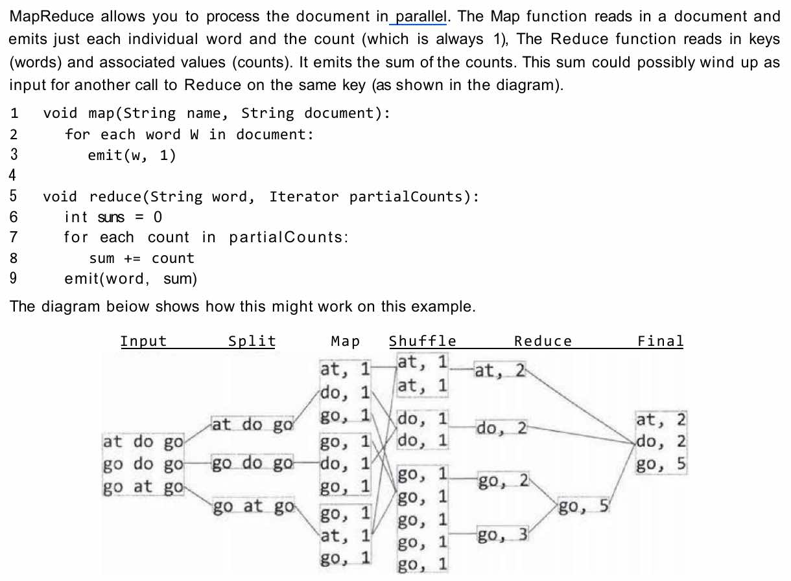
- 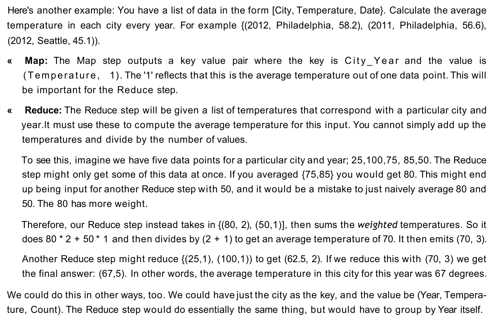
Data¶
- change data capture: streaming db changes (from db log) to downstream systems
- PII: Personally Identifiable Information
- Apache Iceberg: metadata augmenting a table stored as an object (like Parquet files in a data warehouse) to become usable as an ACID table
- RBAC: role based access control
Stream Processing¶
input -> process -> output
- Apache Spark: micro-batching
- Apache Flink: streaming